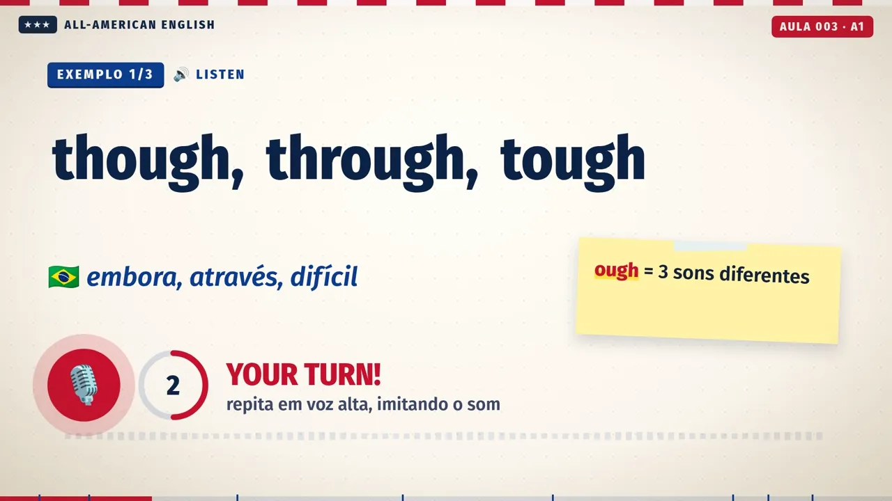
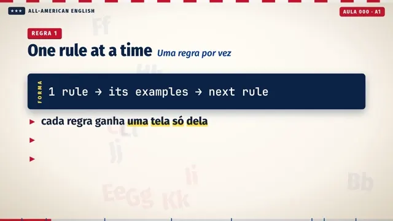
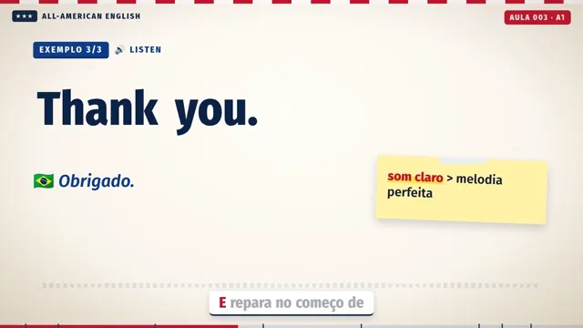
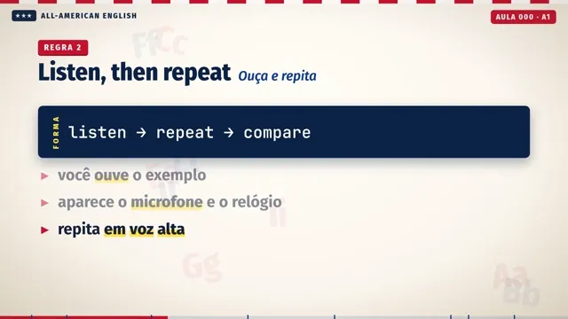
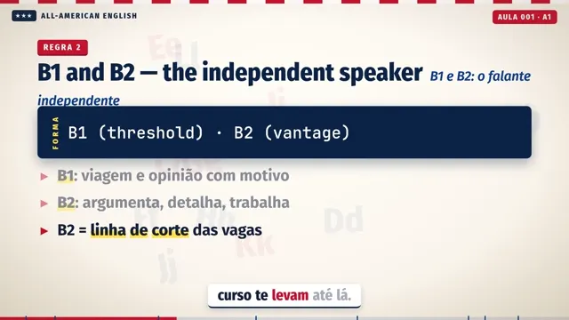
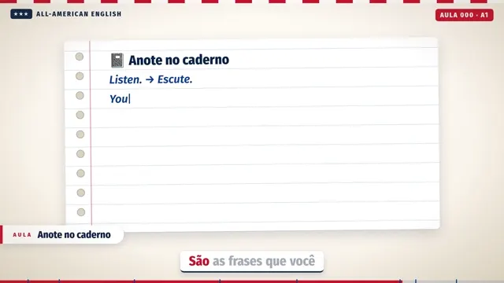
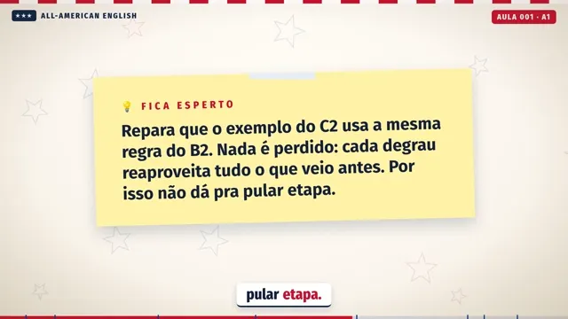

Inglês americano do zero ao C2, explicado em português
600 aulas em vídeo que levam você da pronúncia ao inglês do nível C1/C2. Uma regra por vez, o exemplo com pronúncia nativa logo depois e, na sequência, a sua vez de falar em voz alta.
- 🇺🇸 Pronúncia nativa americana
- 🇧🇷 Explicação em português
- 🗣️ Prática de fala em toda aula

Você estuda inglês há anos e ainda trava na hora de falar?
Não é falta de esforço. Na maioria dos cursos, a regra fica solta e ninguém mostra onde o português atrapalha o seu inglês. Aqui cada regra vem comparada com o português, com os erros que entregam o brasileiro na primeira frase.
Advices, informations, childs
Os plurais que não existem em inglês e que todo brasileiro já falou. Você aprende por que estão errados, e não só que estão.
Eu entendo lendo, mas não ouvindo
O curso começa pela pronúncia: os sons do inglês americano, a fala ligada e o ritmo que faz o nativo parecer rápido demais.
Sei a regra, mas não sai na hora
Em toda aula tem a sua vez de repetir em voz alta. Nas de gramática, ainda vêm exercício com pausa e resposta, ditado e uma missão para usar o inglês fora do vídeo.
Nas aulas de gramática, o mesmo roteiro do começo ao fim
Nas aulas de gramática, você sabe exatamente o que vem a seguir. Assim a sua energia vai para o inglês, e não para entender o formato.
Uma regra por vez
Explicação curta, em português, com a comparação direta com o jeito que a gente fala no Brasil.
Exemplo com pronúncia nativa
Logo depois da regra, frases do dia a dia faladas em inglês americano, com legenda no ritmo da fala.
A sua vez
O vídeo pausa para você repetir em voz alta. É assim que a regra sai da cabeça e chega na boca.
Pratique e confira
Exercícios com tempo para pensar e resposta comentada. Sem gabarito escondido no fim de um PDF.
Ditado e caderno
Você escuta, escreve e confere. No fim, as frases-chave da aula para anotar no caderno.
Missão fora do vídeo
Uma tarefa curta para usar o que aprendeu no mundo real: numa mensagem, num vídeo, numa conversa.
E entre uma regra e outra, aulas de vocabulário: palavras e chunks (os blocos de frase prontos que o nativo usa), cada um com tradução, pronúncia nativa e a sua vez de repetir. Nas aulas de fonética, cada som do inglês americano vem com gravação real e sete palavras para treinar.
É assim que as aulas são, tela por tela
Telas reais dos vídeos. A aula é narrada e a tela inteira fica para o conteúdo: a regra, o exemplo com pronúncia nativa, a sua vez de falar e o caderno.






59 módulos, do primeiro som ao inglês de nível C1/C2
Cada módulo cobre um tema da gramática americana e traz aulas de vocabulário e de chunks, os blocos de frase prontos que o nativo usa. A trilha vai na ordem dos níveis do Quadro Europeu, o CEFR (a régua internacional que mede o nível de um idioma, do A1 ao C2).
BasePronúncia e as peças da frase · módulos 00 a 09
- 00Como usar este cursoHow to Use This Course3 aulas · A1→C2
- 01Fonética e pronúncia americanaPhonetics and Phonology16 aulas · A1→C2
- 02Classes de palavrasParts of Speech10 aulas · A1→A2
- 03SubstantivosNouns32 aulas · A1→B1
- 04Artigos e determinantesArticles & Determiners14 aulas · A1→B2
- 05PronomesPronouns3 aulas · A1→B1
- 06AdjetivosAdjectives13 aulas · A1→B2
- 07AdvérbiosAdverbs13 aulas · A1→C1
- 08PreposiçõesPrepositions11 aulas · A1→C1
- 09Conjunções e conectivosConjunctions & Linking Words10 aulas · A1→C1
Os verbosTempos, modais, condicionais e voz passiva · módulos 10 a 23
- 10Fundamentos dos verbosVerb Fundamentals9 aulas · A1→B2
- 11Tempos do presentePresent Tenses20 aulas · A1→B1
- 12Tempos do passadoPast Tenses13 aulas · A2→B2
- 13Formas de futuroFuture Forms8 aulas · A2→B2
- 14Aspecto e contraste entre temposAspect & Tense Contrasts5 aulas · B1→C1
- 15Verbos modaisModal Verbs9 aulas · A2→C1
- 16Modais no perfeitoModal Perfects8 aulas · B1→C1
- 17CondicionaisConditionals6 aulas · A2→C1
- 18Desejos e situações irreaisWishes & Unreal Situations3 aulas · B1→C1
- 19Voz passivaPassive Voice10 aulas · A2→C1
- 20Estruturas causativasCausative Structures3 aulas · B1→C1
- 21Gerúndio e infinitivoGerunds & Infinitives6 aulas · A2→C1
- 22Padrões verbais e complementosVerb Patterns & Complementation7 aulas · B1→C1
- 23Discurso indiretoReported Speech8 aulas · B1→C1
Frases de verdadeOrações, ênfase, perguntas e concordância · módulos 24 a 37
- 24Orações relativasRelative Clauses6 aulas · A2→C1
- 25Orações substantivasNoun Clauses & Content Clauses10 aulas · B1→C1
- 26Orações adverbiaisAdverbial Clauses6 aulas · A2→C1
- 27Particípios e orações reduzidasParticiples & Participle Clauses4 aulas · B1→C1
- 28Orações infinitivasInfinitive Clauses3 aulas · B1→C1
- 29Subjuntivo e estruturas mandativasSubjunctive & Mandative Structures4 aulas · B2→C2
- 30InversãoInversion8 aulas · B2→C2
- 31Frases clivadas e ênfaseCleft Sentences & Emphasis5 aulas · B2→C2
- 32Comparação e grauComparison & Degree5 aulas · A2→C1
- 33NegaçãoNegation6 aulas · A1→C1
- 34PerguntasQuestions12 aulas · A1→C1
- 35Question tags e respostas curtasTag Questions & Elliptical Responses7 aulas · A2→C1
- 36ConcordânciaAgreement & Concord8 aulas · A2→C1
- 37Determinantes e quantificadoresDeterminers & Quantification14 aulas · A1→B2
Vocabulário que funcionaFormação de palavras, phrasal verbs e expressões · módulos 38 a 44
- 38Formação de palavrasWord Formation14 aulas · A2→C1
- 39Prefixos e sufixosPrefixes & Suffixes14 aulas · A2→C1
- 40Collocations e gramática lexicalCollocations & Lexical Grammar13 aulas · B1→C1
- 41Phrasal verbsPhrasal Verbs & Multiword Verbs19 aulas · A2→C1
- 42Expressões idiomáticasIdioms & Fixed Expressions21 aulas · B1→C2
- 43Escolha de palavras e precisãoWord Choice & Semantic Precision22 aulas · B1→C2
- 44Transformações de frasesKey Word Transformations3 aulas · B2→C2
Texto e fala no nível C1Coesão, estilo, escrita, conversa e provas · módulos 45 a 58
- 45Combinação de orações e frases complexasClause Combining & Sentence Complexity28 aulas · A2→C1
- 46Paralelismo e coordenaçãoParallelism & Coordination21 aulas · B1→C1
- 47Elipse e substituiçãoEllipsis & Substitution2 aulas · B1→C1
- 48Marcadores de discurso e coesãoDiscourse Markers & Cohesion15 aulas · B1→C1
- 49PontuaçãoPunctuation2 aulas · A2→C1
- 50OrtografiaSpelling & Orthography2 aulas · A1→B2
- 51Registro e estiloRegister & Style13 aulas · B1→C2
- 52Gramática e uso do inglês americanoAmerican English Grammar & Usage7 aulas · A2→C2
- 53Gramática formal e acadêmicaFormal & Academic Grammar16 aulas · B2→C2
- 54Gramática para escrever no C1Writing Grammar for C113 aulas · B2→C1
- 55Gramática para falar no C1Speaking Grammar for C117 aulas · B1→C1
- 56Erros avançados comunsCommon Advanced Grammatical Errors3 aulas · B1→C2
- 57Gramática para provasExam-Specific Grammar Practice16 aulas · B1→C2
- 58Critérios de domínio do C1C1 Mastery Criteria1 aulas · C1
Entre agora e pague o menor preço que este curso vai ter
Pagamento único. Quando as 600 aulas estiverem prontas, o preço passa a ser R$ 297.
- As aulas já liberadas, para começar hoje
- Todas as aulas novas que forem lançadas, sem pagar nada a mais
- 59 módulos do A1 ao C2, com explicação em português
- Pronúncia nativa, prática de fala, exercícios, ditado e missões
- Acesso vitalício, no computador e no celular
- Garantia incondicional de 7 dias
Combinado transparente: o curso está sendo produzido e as aulas são liberadas aos poucos na sua área de membros. Você paga uma vez só e recebe tudo o que for lançado.
Icaro William, o Tio Jobs
Engenheiro de software e criador da Jobs Treinamentos. Desenvolveu este método para quem precisa do inglês de verdade, no trabalho, numa entrevista ou numa viagem, e cansou de material que ensina regra solta, sem dizer onde o português atrapalha.
As aulas são narradas, sem professor na tela: o foco fica todo no conteúdo, com a explicação em português e os exemplos em inglês com pronúncia nativa.
garantia
Risco zero para você
Assista, pratique e veja se o método funciona para você. Se em até 7 dias você achar que não é para você, é só pedir o reembolso pela Kiwify e receber 100% do valor, sem precisar explicar o motivo.
Perguntas sobre o curso
Preciso saber alguma coisa de inglês para começar?
Não. O curso começa do zero, pela pronúncia e pelas peças básicas da frase, e sobe até o C2. Se você já tem uma base, pode pular direto para o módulo do seu nível.
As aulas são em português ou em inglês?
A explicação é em português, para você entender a regra de verdade. Todo exemplo vem em inglês americano com pronúncia nativa, e a cada exemplo é a sua vez de repetir em voz alta.
Como funciona a pré-venda?
O curso está em produção. Quem entra agora paga R$ 97, assiste às aulas já liberadas e recebe todas as novas na mesma área de membros, sem pagar nada a mais. Quando as 600 aulas estiverem prontas, o preço sobe para R$ 297.
Tem professor aparecendo nas aulas?
Não. As aulas são narradas e a tela inteira fica para o conteúdo: a regra, o exemplo com pronúncia nativa, a sua vez de repetir, os exercícios e o caderno. O método foi desenvolvido por Icaro William, o Tio Jobs.
Por quanto tempo tenho acesso?
O acesso é vitalício: você assiste quando e quantas vezes quiser, no computador ou no celular, inclusive às aulas que ainda vão ser lançadas.
E se eu não gostar?
Você tem 7 dias de garantia. Se não for para você, pede o reembolso pela própria Kiwify e recebe 100% do valor de volta, sem precisar explicar o motivo.
Quais são as formas de pagamento?
Pix, boleto e cartão de crédito, com opção de parcelamento. O pagamento é processado pela Kiwify, e o acesso chega no seu e-mail assim que o pagamento é aprovado.
O próximo nível do seu inglês começa na primeira aula
R$ 97 na pré-venda, acesso vitalício e todas as aulas novas incluídas.
Quero começar agora →